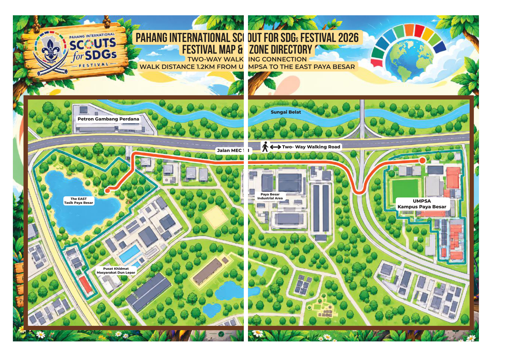

Map festival
Paparan lalai ialah Full Map. Pilih tab untuk melihat kawasan lebih terperinci atau peta satelit.

📍 Kedudukan GPS
Benarkan akses lokasi pada pelayar. Pilih zon peta dahulu untuk melihat penanda pada imej zon tersebut.
Koordinat: —
🧭 Kalibrasi peta zon
Untuk setiap peta, pilih sekurang-kurangnya 3 titik yang diketahui. Kemudian tekan lokasi titik itu pada imej peta.
Terus ke SDG
Select any goal to view its location and PDF guide.
SDG 04 · Quality Education
Rear Courtyard Between Buildings — SDG 04 marker on the Court Frontage map, page 3 of the source PDF.
17 SDG Directory
SDG names and location labels follow the English terminology used on the festival maps.
SDG PDF Documents
Open the individual PDF guide for each Sustainable Development Goal.
Implementation Tracker
Tick each SDG after the activity or task has been completed.
Your implementation record will appear here.
Record storage: ticks are saved in this browser on this device. They are not automatically shared or synchronised with other teachers or devices.